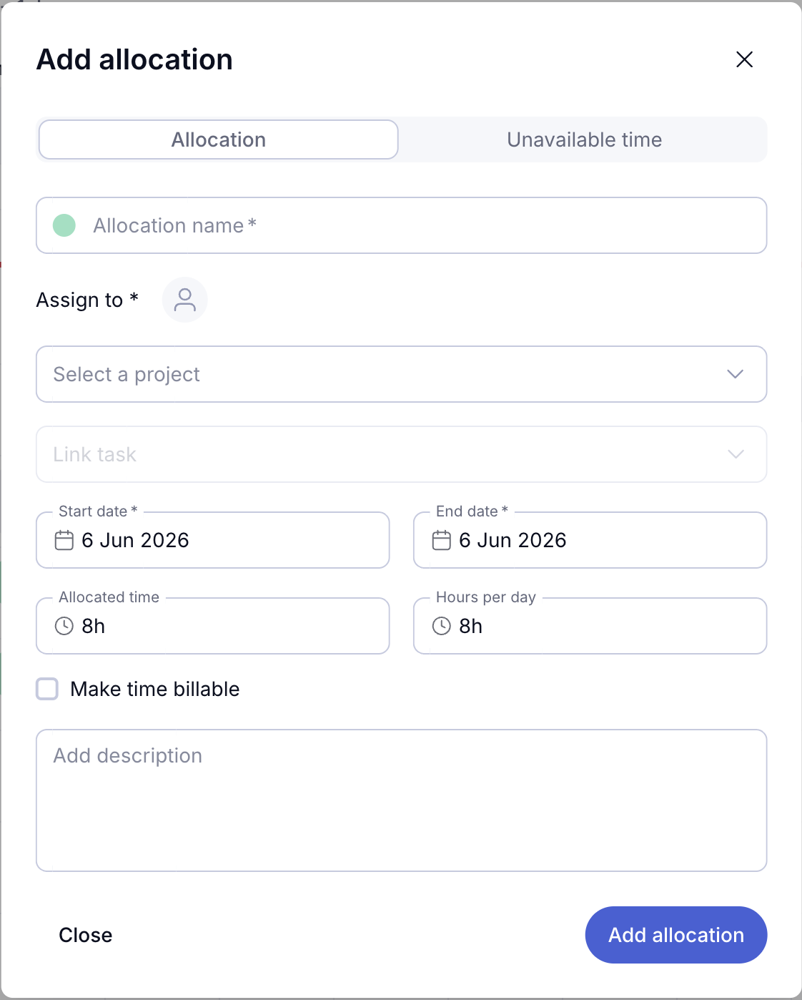
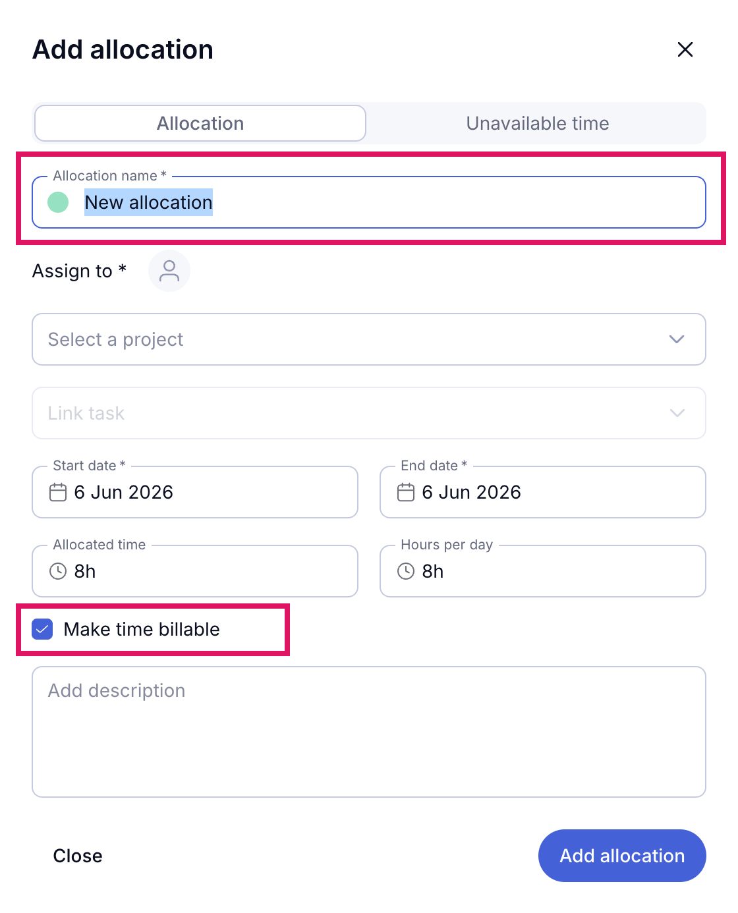

01
Add allocation
Users were required to manually complete every field in the Add Allocation modal before an allocation could be created — increasing time-to-create and the chance of drop-off.
What Changed
Three smart defaults remove friction from the required fields. The allocation name pre-fills as "New allocation" with the field pre-selected — so users can type a custom name immediately without clearing anything first. Make time billable is automatically enabled, reflecting the most common allocation type. Users can now open the modal and create an allocation without interacting with any field.
Before

After
